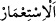

65. “Fakat onu kesip devirdiler. (Salih) dedi ki: “Yurdunuzda üç gün daha
yaşayın. Bu, yalan olmayan bir uyarıdır.”
66. Emrimiz gelince Salih’i ve onunla beraber îmân edenleri, bizden bir rahmet
olarak (azabdan) ve o günün zilletinden kurtardık. Şüphesiz Rabb’in güçlüdür, (her
şeye) galiptir.
67. Zulmedenleri de o korkunç ses yakaladı ve yurtlarında diz üstü çökekaldılar.
68. Orada hiç kalmamış gibi oldular. İyi bilin ki, Semud kavmi Rab’lerini inkar
ettiler. Yine iyi bilin ki, Semud kavmi (Allah’ın rahmetinden) uzak kılındı.”
“Semûd kavmine de kardeşleri” neseb bakımından kendilerinden biri olan “Salih’i”
gönderdik.
Semûd, bir Arap kabilesidir. Ataları olan Semûd b. Âd b. İrem b. Sâm’ın ismine
izâfeten bu adı almıştır. Sularının azlığından dolayı bu adı aldıkları da söylenir. Çünkü
Semûd az su anlamına gelen “Semed” kökünden gelmektedir.
Sâlih (a.s.)’ın nesebi şöyledir: Sâlih b. Ubeyd b. Asef b. Mâseh b. Ubeyd b. Hâver b.
Semûd.
“Dedi ki:” Bu cümle açıklama için olan başlangıç cümlesidir. Sanki birisi: “Sâlih
onlara gönderilince ne dedi?” diye sormuş, ona cevap olarak şöyle denilmiştir: Dedi ki:
“Ey kavmim,” sadece “Allah’a kulluk edin.” Çünkü “O’ndan başka tanrınız yoktur!
Sizi yerden (topraktan) yaratan” yani ilk olarak yerden var eden O’dur. Âdem (a.s.)’ı
topraktan yaratması hasebiyle sizi de topraktan yaratmış oldu. Âdem (a.s.), kıyamete
kadar gelecek bütün zürriyetini icmâlî olarak kendisinde toplamaktadır. Onun bütün
zürriyeti, menîden ve hayız kanından yaratılmaktadır.
Meni kandan, kan ise gıdalardan meydana gelir. Gıdalar da ya hayvanî ya da nebâtî
olur. Nebâtî gıdalar topraktan meydana gelir. Hayvânî gıdalar ise yine neticede
topraktan oluşan nebâtî gıdalardan meydana gelir. Böylece Allah Teâlâ’nın tüm canlıları
yerden yarattığı kesinleşmiş oluyor.
“ve sizi orada yaşatan” başkası değil “O’dur.” Yâni size ömür veren ve sizi
yeryüzünde bırakan O’dur. Medârik’de zikredilmiştir ki Semûd kavminden her bir
kimsenin ömrü üç yüzden bine kadardı.
Ka‘bu’l-ahbâr şöyle der: “ve sizi orada yaşatan O’dur.” ifadesi, yeryüzünün âbâd
edilmesinin gerekli olduğunu gösteriyor. Çünkü “__WORD__, âbâd etmeyi istemek
mânâsındadır. Allah’tan gelen mutlak taleb ise emretme ve vâcip kılma mânâsına
hamledilir. Buna göre mânâ şöyledir: “Size yeryüzünü âbâd etmenizi emreden ve âbâd
etme gücü veren O’dur.” Nitekim Kâşifî şöyle der: “Size yeryüzünü imar etme kudretini
verdi ki gezmek için evler yapın, nehirler kazın, ağaçlar dikin ve bunlarla meşgul olun.”
“O’ndan mağfiret dileyin” îmân etmek suretiyle Allah’tan bağışlanma dileyin. Çünkü
açıklanan bu türlü ihsanlar, O’ndan mağfiret dilemeyi gerektirir. “Sonra da” O’ndan